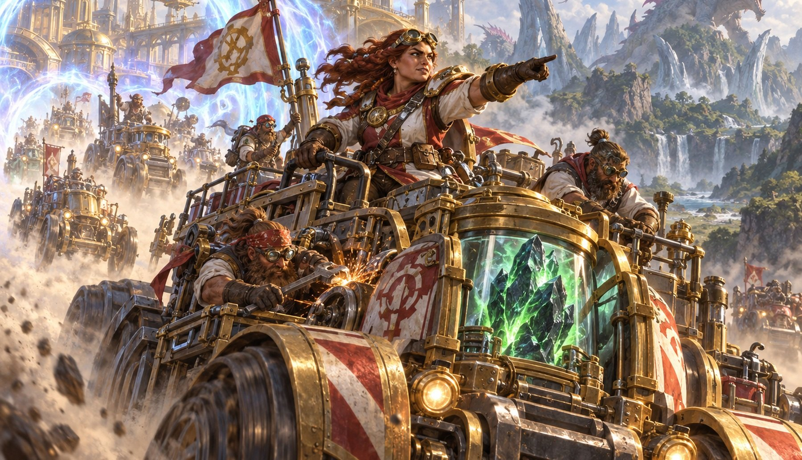
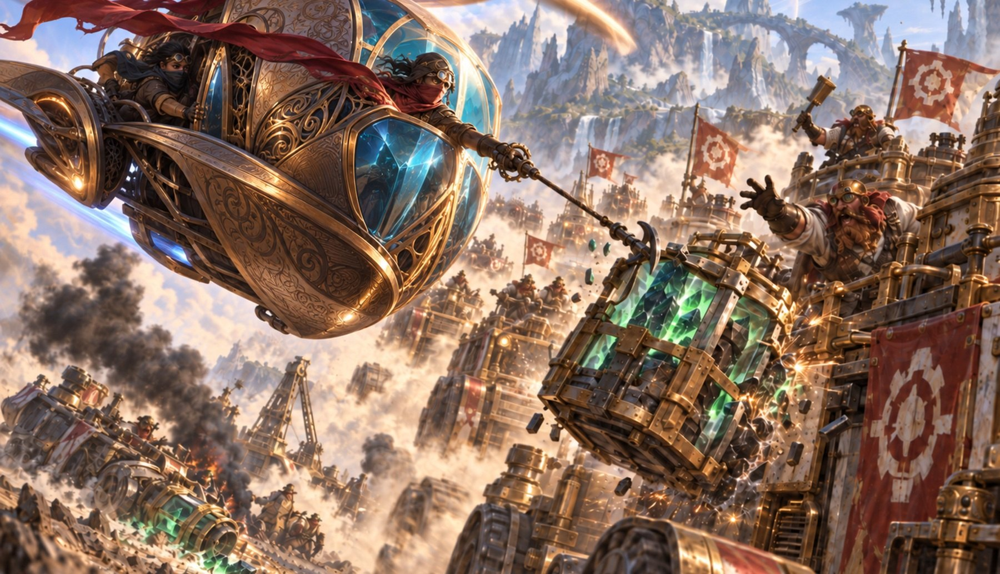
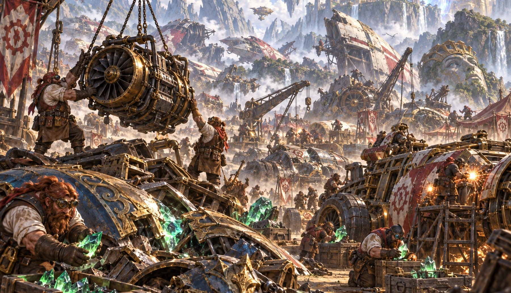

01
Depala's Expedition
The circuit's official recovery team. Depala's engineers survey new routes, retrieve shards, and insist that both are safer in their hands. The Heart of Kiran leads the convoy.
Survey · Recover · Hold
Cube Lore
The Omenpaths opened the racing circuit to other worlds. Then a crew came back from Ikoria with a piece of the Ozolith in its hold.
Avishkar · Ikoria · The Omenpaths
When the Omenpaths opened, Avishkar's racers did what racers always do: they found out where the new roads went, then argued over who could cross them fastest. The old circuit became a string of dangerous runs through worlds whose weather, gravity, and wildlife had never seen a Vehicle before.
One crew returned from Ikoria with half its machines missing and a sliver of The Ozolith chained to the bed of the last truck. On the journey home, dents closed around it. Fresh plating thickened overnight. A Hangarback Walker rebuilt itself from scrap no one remembered loading. By the time the crew reached Avishkar, the shard was worth more than the purse.
Within a month, the circuit had changed. Race officials added salvage rights to the rules. Maps to rumored fragments passed through back rooms for obscene prices. Crews still crossed the finish line, but only after checking what everyone else had brought home.
Three crews shape the Run
The circuit's official recovery team. Depala's engineers survey new routes, retrieve shards, and insist that both are safer in their hands. The Heart of Kiran leads the convoy.
Magda, the Hoardmaster has no reason to brave an unknown world when she can rob the people coming back. Her crews know every shortcut, fence, and crooked official on the circuit.
Okiba riders, mechanics, and wreckers with no patience for the difference between salvage and theft. If a machine can move for one more mile, Greasefang will race it.

The official face of the Run
Depala, Pilot Exemplar built the Expedition after the Ikoria crew returned. She hired the best drivers on Avishkar, put Sram, Senior Edificer in charge of permits and supply, and gave Pia Nalaar authority over anything likely to explode. Within a season, the improvised races had become surveyed routes with checkpoints, recovery teams, and armed escorts.
The Expedition's answer to every hazard is better information followed by a better machine. The Heart of Kiran runs at the head of the convoy. Behind it, Shorikai, Genesis Engine serves as workshop, command post, and rolling chartroom. Every recovered shard is logged there before it is sealed and carried back under guard.
Depala says the fragments belong in public custody. Her rivals point out that “public custody” has given her the strongest fleet on the circuit. Both statements are true.
Bring back the crew first. The machine second. The shard does not come before either.

The race becomes a robbery
Magda, the Hoardmaster watched the first expeditions spend fortunes on fuel, scouts, and funerals. Then she paid one driver for a return schedule and stole the cargo ten miles from home. The Salvage Cartel grew from that lesson.
Sai, Master Thopterist sends tiny scouts through the Omenpaths to watch Expedition traffic and count which Vehicles return. His reports tell the Cartel what came home, how badly it is damaged, and which road it plans to take. Fast crews shadow the survivors while heavier crews block the road ahead. By the time an escort sees the Smuggler's Copter, someone has already cut the shard loose.
Magda keeps the organization loose on purpose. Crews bargain over maps, divide stolen cargo, and settle losses among themselves. A Deadly Dispute is bad for business, but the Cartel has never confused bad business with no business.
Why pay to find a shard when Depala will deliver it to the road?

Nothing useful stays dead
Greasefang, Okiba Boss arrived from Kamigawa with six riders, two tow cables, and no interest in Avishkar's salvage laws. On her first night at the circuit, the Okiba hauled a burned-out racer from an impound yard. It was back on the starting grid by morning.
Her mechanics work beside the track while the wrecks are still hot. Repairs are judged by distance, not beauty: enough road to clear the ambush, reach the next garage, or steal the win. The Carrion Cruiser looks assembled from three different accidents because it was.
The Cartel strips wrecks for parts. Greasefang keeps their histories intact. Old dents, replacement engines, and crystal growth all go back into motion together. Her Reckoner Bankbuster has been declared beyond repair four times. Around the Okiba, that only means someone has issued a challenge.
Dead is what you call a machine when you have run out of ideas.
Something is wrong with the cargo
The first reports were easy to dismiss. Compass needles turned inside sealed cases. Two fragments stored across a workshop dragged their crates several inches closer overnight. Machines exposed to different shards began developing the same ridges of crystal in the same places.
Then Shorikai's navigators laid every unexplained reading over the master chart. Routes surveyed months apart curved toward the same unmarked regions. The Ozolith was not scattered at random, and its fragments were not waiting to be collected. They were directing the search.
Whatever the crews intend, every run carries the pieces closer together.
Shuffle up
Depala may bring the fragments home aboard the Heart of Kiran. Magda may take them before the convoy reaches Avishkar. Greasefang may arrive in a Vehicle everyone else left burning beside the road. Each draft deals the crews another route and gives the Ozolith another chance to gather its pieces.
The engines are running. Nobody intends to come back empty-handed.
Cube list
This is the current 360-card list for The Ozolith Run. Skip it if you want the story without the deck.
Planechase
These are the 20 plane cards for The Ozolith Run. Skip it if you want the story without the board.